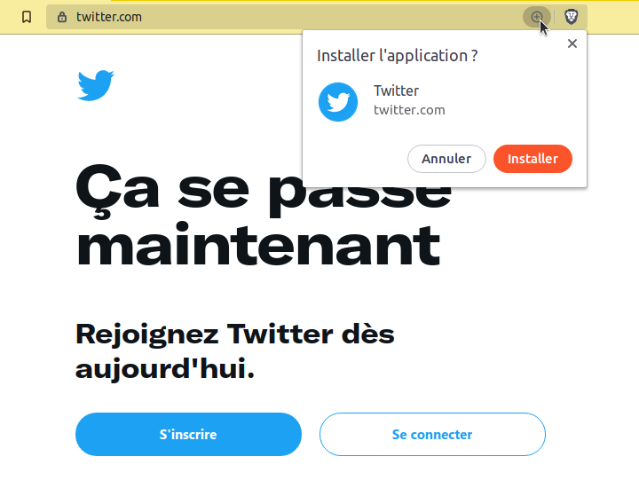

Les "Technos Web"... quelques notions non abordées
1. Système de gestion de contenu (CMS)
Les systèmes de gestion de contenu (Content Management System - CMS) sont des solutions logicielles permettant de concevoir, gérer et mettre à jour des sites Web de manière "dynamique" (comme vu dans les TP précédents, on emploie ce terme pour désigner le fait que le contenu est généralement stocké dans une base de données et mobilisé server-side pour venir enrichir des modèles de pages).
Pour être qualifiées de CMS, ces solutions doivent présenter plusieurs caractéristiques :
- permettre l'édition simultanée d'un document par plusieurs éditeurs et offrir des fonctionnalités de hiérarchisation des utilisateurs avec des rôles (contributeur, administrateur, etc.)
- permettre la séparation de la gestion du contenu et de la forme
- fournir la chaîne de publication des documents / du contenu du site
- permettre la structuration du contenu (FAQ, blog, forum)
Ces CMS proposent ainsi généralement une interface Web permettant l'administration du site et permettant l'édition de pages web via l'utilisation d'outils WYSIWYG (What You See Is What You Get) ou via l'utilisation de balises simplifiées (BBCode, Markdown, etc.). La personnalisation du design (ou l'ajout de fonctionnalités plus avancées) relève parfois de l'utilisation de plugins.
Parmi les plus utilisés : Wordpress, Wix, Joomla, Shopify, Drupal.
Certains d'entre-eux sont spécialisés dans la réalisation de types de sites web précis : phpBB est un moteur de forum et MediaWiki est un moteur de Wiki.
Remarque: L'usage d'un CMS est loin d'être un élément négligeable de la publication sur le Web. En effet, à la date du 09/01/2023, Wordpress est utilisé par 43.1% des sites web, Shopify par 3.8% et Wix par 2.4%.
Toutefois 32.2% des sites web n'utilisent pas de CMS (c'est environ 1.5 points de moins qu'il y a un an).
Source: https://w3techs.com/technologies/overview/content_management
2. Langages de balisages légers
Il existe des langages de balisage dont la syntaxe est moins présente visuellement que le HTML. Les documents qui utilisent ces langages ont pour vocation de pouvoir être créés et modifiés avec un éditeur de texte simple et se doivent d'être facile à lire dans leur forme non formatée.
Ces langages de balisages léger ont été conçus pour être transformés vers des langages de balisage plus complexes (HTML ou LaTeX par exemple) et pour produire des documents (PDF par exemple).
- wikitext est utilisé pour les pages Wikipedia
- ReStructuredText est utilisé dans la documentation Python
- Markdown est utilisé pour la rédaction de différentes documentations (langage Rust, README des projets sur GitHub/GitLab, etc. - ce support de TP est également rédigé en Markdown puis converti en HTML et en PDF)
Éditeurs Markdown en ligne:
- https://dillinger.io/
- https://pandao.github.io/editor.md/en.html
- http://socrates.io/ (pas d'exemple présent à l'ouverture de la page !)
- https://hackmd.io/ (collaboratif)
3. Quelques tendances du développement web en 2022
Il s'agit de morceaux choisis, sur la base de mes lectures et donc forcément orienté par mes centres d'intérêt (certains des points évoqués peuvent être retrouvé sur des articles tels que https://dev.to/theme_selection/dominating-web-development-trends-2021-2ihp - mis à jour pour 2022).
Si vous êtes intéressés par le développement web vous risquez de rencontrer certains de ces termes lors de vos recherches.
Mobile first design
Le mobile first est un concept appartenant à la conception de sites web réactifs. Dans ce mode de pensée la construction d'une interface ergonomique pour terminaux mobiles est privilégiée, avant d'établir l'ergonomie pour un terminal de bureau. Nous en avons parlé dans les premières séances et c'est le principe utilisé par le framework Bootstrap.
Dark mode & low-light UX
Application d'un thème de couleur plus sombre, destiné notamment à éviter la lumière excessive produite par l'écran.
De nombreuses applications web proposent désormais un thème sombre :
- GitHub (depuis décembre 2020)
- StackOverlow (depuis mars 2020)
- YouTube (depuis 2017)
Un des autres avantages attribué à ce type de thèmes est une utilisation moindre de la batterie.
L'efficacité de ces thèmes sombres (notamment sur la productivité) semble toutefois sujette à débat.
SPA (Single Page Application)
Une application web monopage est une application web accessible depuis une page web unique (il n'y pas de chargement d'une nouvelle page lors d'une action de l'utilisateur, permettant de fluidifier son expérience). Voir illustration sur https://www.yoozly.com/blog/single-page-application par exemple.
Exemples :
PWA (Progressive Web Application)
Une application web progressive est une application web qui remplit un certain nombre de critères tels que : fonctionne hors-ligne, est installable, peut envoyer des notifications push, etc. Il s'agit d'un type d'application qui peut apparaître à l'utilisateur de la même manière que les applications natives ou les applications mobiles. Ce type d'application tire profit des fonctionnalités offertes les navigateurs modernes.
Exemples de PWA :
- Squoosh (cette application utilise également WebAssembly cité plus bas)
- diagrams.net
- De nombreuses titres de la presse : Le Monde, 20 minutes, etc.

Voir par exemple https://developer.mozilla.org/fr/docs/Web/Progressive_web_apps/Introduction pour plus d'informations.
WebAssembly (wasm)
Il s'agit d'un standard du W3C pour le développement d'application.
"WebAssembly est un nouveau type de code qui peut être exécuté dans un navigateur web moderne. C'est un langage bas niveau, semblable à l'assembleur permettant d'atteindre des performances proches des applications natives (par exemple écrites en C/C++) tout en fonctionnant sur le Web. WebAssembly est conçu pour fonctionner en lien avec JavaScript." (source: https://developer.mozilla.org/fr/docs/WebAssembly)
Un des principaux buts du WebAssembly est donc de compléter le JavaScript pour permettre la création d'applications web performantes. Le code WebAssembly peut toutefois être exécuté hors d'un navigateur web.
Concrètement, il devient possible d'utiliser des langages compilés (tels que le C, C++, Rust ou Go) pour écrire des applications web. Ce code devra être compilé en utilisant le WebAssembly comme cible de compilation. Le code ainsi produit sera executable de la même manière sur toutes les plateformes à travers un navigateur web moderne.
Exemples de jeux ou d'applications fonctionnant dans le navigateur web grâce à WebAssembly :